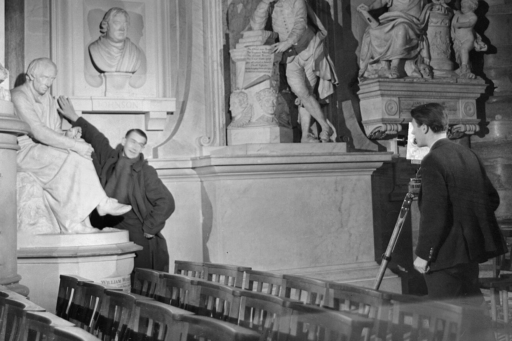
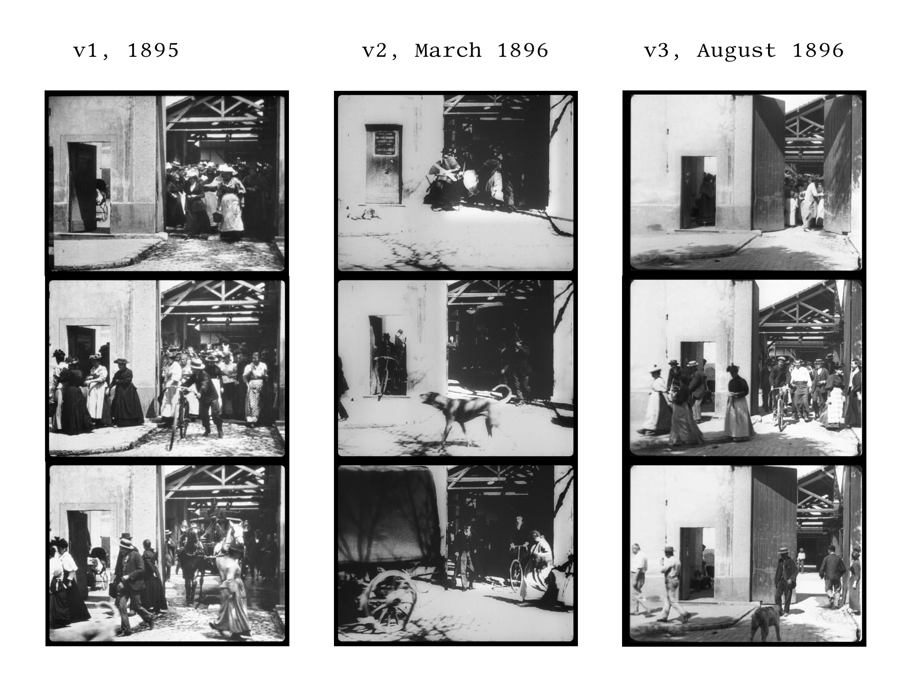
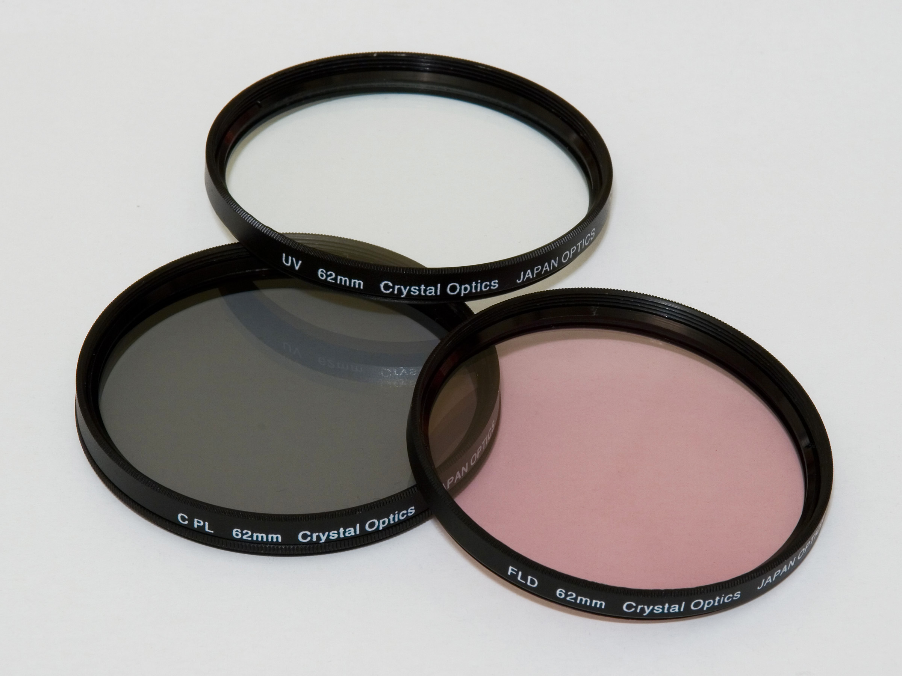

Cinematography
Photography is the art of fixing an image in durable form through either a chemical or digital process. It requires a detailed, scientific knowledge of how light reflects off the lived environment and how that light reacts to various light-sensitive media. It also requires a sophisticated grasp of color temperature and the interplay of light and shadow. It takes an artist’s sensibility to composition — the arrangement of objects and setting within the camera's frame to achieve balance and visual interest — not to mention a deep, technical understanding of the gear required, cameras, formats, lenses, and their respective idiosyncrasies. And it helps if you know how to tell a story in a single image, frozen in time. After all, a picture is worth a thousand words.
Now, do that at least 24 times every second.
That is cinematography: Capturing the moving image.
For many film lovers and even just the casual viewer, this is what we show up for. But I have waited five chapters to discuss it because it is important to understand that cinematography, while it may often get the most glory, is only one part of how cinema works. Without a sophisticated Mise-en-Scène and a narrative to follow, it is just a bunch of meaningless images. Not to mention the importance of editing, sound, and performance. Put it all together, and cinematography is the anchor point to a much larger cinematic experience.
The person responsible for all of this is the cinematographer, sometimes known as the director of photography (DP). Their job is to translate the director’s vision into usable footage, using all of the photographic skills listed above and only after making a series of crucial decisions, which we will get to below. It is one of the most technical jobs in cinema, requiring as much science as it does art:
And just as the production designer oversees a whole crew of craftspeople helping to fully realize the Mise-en-Scène, the cinematographer also relies on a large team known as the camera department. The camera department includes the camera operator, the person actually handling the camera. I know; it seems like that should be the cinematographer. And it often is. However, on larger productions with multiple cameras or very complex shots, the cinematographer can only be in one place at a time. There is also the 1st assistant camera (1st AC), which is responsible for the camera components, swapping out lenses, and, most importantly, keeping the camera in focus. However, that last job is sometimes given to another dedicated member of the team, the focus puller. Then you have the 2nd assistant camera (2nd AC), who assists the 1st AC and often operates the slate or clapper (more on that later).
A relatively new member of the camera department is the Digital Imaging Technician (DIT). With the rise of digital cinematography, instead of a dedicated person responsible for loading film onto the camera (known as a film loader, so creative with the names), we now have a person solely responsible for organizing the digital files coming off the camera. That can include quality control and color correction during the shoot.
Outside the dedicated camera department, the cinematographer also oversees the lighting department as well as the grip department, also known collectively as grip and electric. The lighting department is, well, responsible for all the lights required to shoot a scene. As should be obvious, lights require electricity. Electricity can be dangerous, especially when 100 crew members are running around trying to get a shot before lunch. So, the head of the lighting department is a skilled electrician known as the gaffer. The gaffer has a first assistant as well, called the best boy. (I know, not very gender-neutral. If the "best boy" is female, they might be called best babe, which is worse.) And then a whole crew of electrics is responsible for putting the lights wherever the gaffer tells them to. Grips are there to move everything else that is not a light. That includes lighting stands, flags, bounces, even cranes, dollies, and the camera itself. The head of the grip department is the key grip, and one of their most important jobs is on-set safety. With so many literal moving parts, it is very easy for someone to get hurt.
That is a lot of people to keep track of for one cinematographer, but fortunately, there is a tightly controlled hierarchy, and they all know their jobs. A simple command from the cinematographer, "Flag off that 10k, we are going wide on the dolly," may sound like gibberish, but everyone on a film set knows exactly what to do. In fact, there is a whole cinema-specific vocabulary that film crews use to keep the shoot moving quickly and efficiently. From apple boxes to barn doors to C-stands, the lingo can get downright bizarre. Clothespins are not clothespins; they are C-47s (and yes, they use a lot of clothespins on a film set), and breakfast is not the morning meal; it is the first meal on set, which could be 6 o’clock in the evening. And if someone is in the bathroom, they are 10-100 (or 10-200 as the case may be), but they are definitely not "in the can", which is what you say when a scene is completed.
But aside from the esoteric lingo on the set, there are a few key terms everyone should know. The first is the shot, the most basic building block of cinematography. As mentioned in Chapter Two, a shot is one continuous capture of a span of action by a motion picture camera. A finished film is made up of a series of these shots of varying lengths, that ultimately tell the story. But during production, each shot may need to be repeated several (or dozens or even hundreds of) times until everyone gets it right. Every time they repeat the shot, it is called a take. And once the director and cinematographer feel they have the best version of that shot, it is time to move the camera, and everything associated with it, to a new shot, sometimes just a slightly different angle on the same scene. That is called a set-up. New set-ups require everyone on the crew to jump into action, rearranging the camera, the lights, the set dressing, etc. That can take time. Lots of time. And it is one reason assistant directors, responsible for planning how long it will all take, think of the schedule in terms of the number of set-ups a crew can accomplish each day.
Obviously, a film set is a complicated place requiring a complex choreography of dozens, if not hundreds, of personnel all dedicated to rendering the moving picture. But there are many decisions a cinematographer has to make before they even arrive on set. These decisions, film or digital, black and white or color, lighting, lenses, framing, and movement, are all made in collaboration with the director and in service to the narrative and the overall Mise-en-Scène. Some of them are incredibly technical, and some are purely aesthetic, but each one of them will affect how we engage in the cinematic experience.
One of the first decisions a cinematographer must make is what medium they intend to use to record the images: a physical film stock or a digital sensor. While this is a highly technical decision, it is also an important aesthetic choice that will affect the overall look of the final image. Not only are there differences in the look of film versus digital recording generally, but there are also subtle distinctions in the various film stocks and manufacturers, as well as the different types of digital sensors that come with different camera systems. Let us take each one in turn.
Good old-fashioned film stock has been around since the dawn of cinema, though it has evolved quite a bit since those early days. In the beginning, the strips of light-sensitive material were made from nitrate, a highly flammable material, which was not so great when it was whirring through a projector past a hot lamp. It is one of the reasons many early films are lost to history. They simply burned up too easily. Today, film stock is made from a much sturdier plastic. And on that plastic is a gelatin coating containing thousands of microscopic grains of light-sensitive crystals called silver halide. When light hits those crystals, they darken, depending on the amount of light. (And if it is a color film, there will be three separate layers of those crystals, one blue, one red, and one green.) A chemical bath enhances that reaction to light, rendering a negative image that can then be projected.
Once a cinematographer commits to this analog, chemical process, there are still a lot of decisions to make. First, they must choose a film gauge, that is, the size of the film stock. The film gauge is determined by measuring from corner to corner the individual frames that will be exposed to light. The standard film gauge in cinema today is 35mm, but sizes range from as small as 8mm all the way up to 70mm. And each size will render a different look, with more or less detail once enlarged. They must also decide how sensitive the film will be to light. Highly sensitive, or "fast" film stock, that is, a film that reacts quickly to relatively low levels of light, contains relatively large silver halide crystals (more surface area to absorb the light). The benefit is the ability to film at night or in other low-light situations. The drawback is a loss in resolution or detail in the image due to an increase in the crystals — or grain. Less sensitive, or "slower" film stock produces a crisper image (due to the smaller crystals) but requires more light.
There are many other decisions to be made that may affect the final image, the manufacturer, black and white versus color, the developing process, but using the physical medium of film stock renders an image that many filmmakers claim has a more organic look, a difference you can almost feel more than see. And that comes at a price. Film stock must be purchased by the foot, forcing filmmakers to plan every shot carefully to avoid wasting material. (Of course, many filmmakers see this as a good thing). Not to mention the fact that you do not really know what you have until you develop the film after a day of shooting. Or the fact that you have to assemble your final film by actually cutting and taping together physical strips of film. Or the fact that even if you choose to shoot on analog film stock, most of your audience is going to watch a digitized version in the multiplex or on their television, laptop or smartphone anyway.
For these and many other reasons, good old-fashioned film has fallen somewhat out of fashion in favor of the flexibility of digital cinematography. Digital cinematography is identical in every way to analog film cinematography, same basic equipment, same need to control exposure, shape light, compose the image, etc., with one important difference: the light passing through the lens hits a digital image sensor instead of a strip of plastic film. That sensor uses software to analyze and convert the light bouncing off its surface into a series of still images (just like film stock) that are recorded onto flash memory or an external hard drive.
The advantages should be obvious. First and foremost, there are almost no limits on how much you can record, especially as digital data storage becomes cheaper and cheaper. And since the sensor is controlled by software, you can adjust settings such as light sensitivity at the press of a button rather than changing out the film stock.
But there are still lots of decisions to be made. Just as there are various film gauges, digital sensors come in all shapes and sizes, and every camera manufacturer produces their own subtle variations. And while most of us could probably never tell the difference, cinematographers are very particular about the way a Canon sensor renders color differently from a Sony sensor or a RED sensor from an Arri sensor.
And then there is the issue of resolution. The standard for "high definition" is an image measuring 1,920 pixels by 1,080 pixels, also known as 1080p (the "p" stands for progressive scan since the image is rendered line by line from top to bottom). Pixels are the smallest visible unit in a screen’s ability to produce an image. Think of them as analogous to those tiny silver halide crystals in film stock. 1,920 by 1,080 pixels is a lot of detail, but most digital cinema today is recorded at a much higher resolution of at least 4,096 pixels by 2,160 pixels, or 4K. And even that has become commonplace and somewhat outdated. In fact, you probably have a 4K camera in your pocket right now. It is on your phone. As the technology improves, we will see 6K, 8K, and 10K become standard. All that information packed into every image renders an incredible amount of detail (and also eats up a lot of storage space). Detail most of us, frankly, will not be able to see with the naked eye.
But resolution is not the only factor that affects image clarity. Cinematographers can also manipulate the frame rate to render super-sharp imagery. For decades, the standard frame rate for cinema has been 24 frames per second. That produces a familiar, cinematic "look" to the finished film in part because of motion blur, the subtle blurring that occurs between still images passing at 24 fps. But film shot and projected at 48, 96, or even 120 frames per second renders an ultra-sharp image with almost no motion blur as our brains process far more detail between each individual frame. To be fair, this is possible with analog film stock, but it is impractical to shoot that much film stock at that high a rate. Digital cinematography gives filmmakers like Ang Lee (Billy Lynn's Long Halftime Walk (2016), Gemini Man (2019)) and James Cameron (the Avatar series) the freedom to experiment with these higher frame rates combined with higher resolution sensors to produce images we literally have never seen before.
Another decision cinematographers must make early in the process, in collaboration with the director, is whether to record the image in black and white or color. For many of you, this may seem more a question of history. Old movies are black and white; modern movies are in color. Once the technology allowed for color cinematography, why would anyone look back? But there are a number of reasons why a filmmaker might choose to film in black and white over color, even today. They may want to evoke a certain period or emulate some of those "old" movies. Or, if the subject matter is relatively bleak, they may want the added thematic element of literally draining the color from the image. Or they may want to take advantage of the heightened reality and sharp contrast that black-and-white cinematography provides. Or maybe they want to foreground the performances. One of the greatest directors in cinema history, Orson Welles, once said black and white was the actor's friend because every performance is better without the distraction of color.
But I get it. It is not 1920. You do not ride a penny-farthing or listen to music on wax cylinders. Why would you watch a movie in black and white?
Maybe this will convince you:
Whatever their reason, cinematographers must take several things into account once they choose between black and white and color. First, if they are shooting black and white on film, they typically have to use a film stock designed for black and white imagery. It is possible to print black and white from a color negative, but it will not render the light and shadows in quite the same way as a dedicated film stock. And, of course, if they are filming in color, different film stocks from different manufacturers will render colors differently depending on the desired effect. If they are using digital technology and want the final product to be black and white, the color is usually removed after filming in post-production. But they still have to balance lighting and exposure for how the image will render without color. In either case, it is important to note that black-and-white cinematography requires just as much attention to detail in the filming process as color.
Whether shooting film or digital, black and white or color, one of the most powerful tools a cinematographer has to work with is light itself; without light, there is no image, and there can be no cinema. But simply having enough light to expose an image is not enough. A great cinematographer, heck, even a halfway decent one, knows that their job is to shape that light into something uniquely cinematic. To do that, they must have a deep understanding of the basic properties of light. Four properties, to be specific: Source, Quality, Direction, and Color.
The source refers to both the origin and intensity of the light. There are two basic distinctions in terms of origin: natural or artificial. Natural light refers to light from the sun or moon (which is really just the sun bouncing off the moon, but you knew that), and artificial light refers to light generated from any number of different technologies, LED, incandescent, fluorescent, etc. Each source will have its own particular characteristics, exposing a shot in its own particular way. Artificial light allows a cinematographer an incredible amount of freedom to manipulate and shape the light. Scenes shot indoors on a soundstage can be made to look like daytime exteriors with enough artificial light. Scenes shot outdoors at night can also be augmented with artificial lights standing in for moonlight. But natural light can also be manipulated and shaped through filters, flags (large black fabric squares used to block off the sun's direct light), and diffusers.
Each new scene will require the cinematographer to consider their light source and how they want to shape it. And a big part of that calculation is intensity. How bright is the source, and how is that going to affect exposure? We will discuss depth of field later on, but how much light a cinematographer has to work with affects how much (or how little) of the shot can be in focus and how balanced their exposure will be in the final image. Sometimes a cinematographer can get away with just using available light, that is, the light from the pre-existing fixtures in a location (also called practical lights). But more often, they want to control the intensity more precisely, so they use specialized lights to illuminate the scene from outside the frame of the image. The lamps and overhead lights you might see in a film or TV series are actually more props than true lighting sources. They indicate to the viewer where the light is coming from in a given shot, what cinematographers call motivating the light source and direction, but they rarely add anything to the exposure of the scene.
Check out this short clip:
The subject in the scene is lit by several bright artificial lights just off camera. The table lamp in the background is only there to "motivate" the light that illuminates the side of the subject's face. But it is really just a psychological trick. If you really think about it, a dim lamp behind and to the right of the subject should not illuminate his face at all, but our brain tells us, "Sure, that makes sense." That is because we really want to believe; we do not want to think about a crew of people standing around bright lights while a camera records it all. We want to be fooled, and the cinematographer knows that.
The second property of light cinematographers have to think about is quality. This does not mean "good" or "bad," it is more about how the light "feels" in the shot. The easiest way to think about quality is in terms of hard or soft lighting. Hard lighting is intense and focused, creating harsh, dramatic shadows. Soft lighting is more diffused and even, filling the space with smooth, gradual transitions from light to dark. The difference is actually less about the light on the subject and more about the shadows cast by the subject. Are the shadows clearly defined with a hard edge? You have got hard lighting. Are the shadows fuzzy, less clearly defined, or maybe even absent entirely? You have got soft lighting. Cinematographers can control the quality of light by adjusting the size of the light source and its distance from the subject. Typically, the smaller the light source and the closer to the subject, the harder the light:
The third important property of light is direction. Where is the light coming from in the scene? Not the source, what makes the light, but what direction is it coming from? Left, right, below, above. Each decision will affect the look and feel of a scene, and practical lights in the set design can help motivate lighting direction. A single overhead lamp in an interrogation room will motivate a hard light from above. Large windows can help motivate a soft, diffused light from one side of the room.
Cinematographers plan their lighting set-up for any given scene by thinking carefully about what direction the light is coming from, starting with the main source of illumination, the key light. The key light is usually the brightest light on the set, used to properly expose the main subject. But just one bright light will feel like a spotlight, creating unwanted shadows. So, they use a fill light, usually less intense and a bit softer than the key light, to fill out those shadows. But those two lights shining on the front of your subject can make the scene feel a bit two-dimensional. To bring some depth to the image, they use a backlight, usually a hard light that shines on the back of a subject's head (also called a hair light), to create some separation between the subject and the background. The brightness of each of these lights relative to each other is known as the lighting ratio and can be adjusted for various different effects. This lighting setup is known as three-point lighting, and it is the most basic starting point for lighting a scene:
Of course, three-point lighting is just that, a starting point. Really complex lighting schemes will require far more layers to the set-up. But even then, cinematographers will talk to their gaffers, electrics, and grips in terms of key, fill, and back lights.
The fourth property of light that every cinematographer must understand is color. And no, I do not mean red, blue, and green light bulbs. I mean the subtle color cast that different light sources give off that will ultimately affect the exposed image. For example, a typical household incandescent light bulb uses a tungsten filament to produce light. That light usually has a warm orange glow to it. But a fluorescent tube light in a ceiling fixture gives off a cooler, bluer light. In fact, we have come up with a way to measure these differences using the concept of color temperature. Color temperature is measured in degrees Kelvin. The higher the degree Kelvin, the cooler or more "blue" the light. The orange glow of a tungsten bulb is around 3200 Kelvin. Daylight is around 5600 Kelvin.
It can get a little confusing, I know. Check out this quick overview of the science behind color temperature and how we use it in cinema:
As should be clear by now, color temperature matters a great deal when a cinematographer wants to set a particular mood. For example, a romantic scene in a candle-lit restaurant should have a warm orange glow. Fortunately, you do not need to rely on a thousand candles to achieve that effect. Most modern LED (light-emitting diode) lights can be adjusted according to color temperature. All you have to do is dial in 2000K to your key, fill, and backlights, and you get the equivalent of the warm glow of candlelight without the fire hazard.
Source, quality, direction, and color are the four most important properties of light cinematographers must master to create great cinema. Once we understand these same properties, we can start to understand how cinematographers combine them to achieve an effective lighting style in any given scene, film, or series. For example, by lowering or removing the key light and relying more on indirect, relatively hard fill and backlights, you create deep shadows and high contrast in a scene. As mentioned in Chapter Three, this style of lighting is known as low-key lighting (because of the lack of a dominant key light, not because it is laid back), used to evoke mystery and even terror.
Check out this short video essay on one of the greatest living cinematographers, Roger Deakins, and how he approaches lighting style in his work:
Another powerful tool a cinematographer has to work with is, of course, the camera. And there is a lot that goes into how that particular apparatus works and the nuances between different formats and manufacturers. But I want to focus on the one component that is interchangeable and allows for endless variety: the lens. No matter what camera a cinematographer chooses, it is the lens that determines the clarity, framing, depth of field, and exposure of the image. Just by changing the lens, without moving the camera at all, you can radically transform the look of a shot.
The principle behind a camera lens is pretty simple. A piece of curved glass (or several pieces depending on the lens), held in place on the front of the camera, focuses light through an adjustable aperture (a fancy word for "hole") and onto light-sensitive material (film or a digital sensor). The aperture controls the amount of light entering the camera, and the glass "elements" control the sharpness of the image by moving closer or further away in tiny increments from the aperture. The overall distance between the sensor and the point at which the light passes through those glass elements is called the focal length and is measured in millimeters. So, in a 50mm lens, the distance between the sensor of the camera and the point where the light passes through the glass of the lens is 50 millimeters.
The focal length determines both the angle of view and the magnification of the image. The shorter the focal length, the wider the angle of view and the smaller the magnification. The longer the focal length, the narrower the angle of view and the greater the magnification. Any lens below 35mm is generally considered a "wide-angle lens" because of its relatively short focal length. Any lens above 70mm is considered a "telephoto lens" because it greatly magnifies the image.
Lenses can be divided into two basic types based on how they treat focal length: zoom and prime. Zoom lenses allow you to adjust the focal length by sliding the glass elements closer to or further away from the sensor, thus greatly magnifying the image or widening the angle of view without swapping out the lens itself. Prime lenses have a fixed focal length. What you see is what you get. Now I know what you are thinking. Why not just slap a zoom lens on there and choose your own focal length? But actually, cinematographers almost always use prime lenses when filming. For one thing, zoom lenses tend to have many more glass elements than primes and that can affect the quality of the image. But more importantly, prime lenses force the cinematographer to be more deliberate and intentional about the angle of view and magnification of a particular shot.
Confused yet? Maybe this will help:
Still confused? Here is an explanation in just 23 seconds:
The angle of view and magnification is important in terms of what is visible in the frame, but just as important is what appears to be in sharp focus. Lenses also allow cinematographers to control the depth of the image by either isolating a subject as the only element we see clearly in a particular shot or allowing us to see everything in the background and foreground equally. This is called depth of field, the range of distance in front of the camera in which subjects are in sharp focus.
Take a look at this image:

Note how the figure of the man lighting his cigarette is isolated from the background, focusing our attention on the spark from the lighter. This is an example of a narrow depth of field. The range of distance in front of the camera in which subjects are in sharp focus is relatively small, creating less depth in the image.
Now check out this image:

Note that everything seems to be equally in focus, allowing us to pick out all of the details of the set design. This is an example of a wide depth of field or deep focus.
But since cinematography is all about moving pictures, this is not necessarily a binary choice. A cinematographer can change the depth of field within a shot to shift our attention from one subject to another. This is called a rack focus or pull focus:
Now that you know what it is, you will see it all the time in film and tv. In fact, there is usually one person on set whose only job is to manage those shifts in the depth of field within a shot. They are called, appropriately enough, a focus puller.
The Director of Photography

Probably the second most important person on set after the Director is the Cinematographer or "DP," the Director of Photography. This person is tasked with visually helping the Director create the look they want for the film. This person must have strong skills as both an artist and a technical expert. Remember to differentiate this person from the Camera Operator, whose job is to shoot the footage. One person could do both jobs on a smaller production, but larger productions today typically have many camera operators but only one DP. Lighting is a key component of Cinematography. For artistic reasons, it is also an important quality of mise-en-scene. Still, it is also a critical component of cinematography because of how it is used to create contrast and exposure.
Cinematography depends on three primary things:
- The composition of the objects and people within the frame
- The photographic quality of the image
- The movement of the camera
The very first Cinematographers were all accomplished Still Photographers. Thus it is not surprising to find some very well-composed shots in some of the very earliest Lumière films in 1895:

One of the first things we teach students of either video or still photography is not to frame the main subject in the dead center of the screen. Instead, we teach them the "rule of thirds": imagine the frame divided into thirds horizontally and vertically (a tic-tac-toe grid of nine equal boxes), and place the main subject at one of the four points where those lines intersect.
A well-composed shot positions everything in the frame with a sense of appropriate balance. In the shower scene in Psycho, Marion is in the right foreground, taking a shower, while the left background contains the door that opens and the murderer coming in with the knife.
The Photographic Aspects of the shot have much to do with the tonal range, the contrast range between the lightest and darkest areas within the image. One of the reasons film was preferred over video until the recent development of 4K and 6K cameras (like the RED cameras) was the ability of film to record a much greater contrast range than video. Still, these recent developments in the digital video have eliminated this gap. It used to be that video cameras would lose definition at both ends of the tonal range; the darker areas would be a muddy grey, and the lighter areas would burn out and look overexposed. The industry has been rapidly shifting to HD Digital Video in recent years. However, some directors (like Quentin Tarantino) still prefer to shoot 35mm films, despite the high costs and declining stock availability.
In the past, Directors and Cinematographers also relied on different kinds of film stocks to achieve certain looks in their films, some "slow" stocks gave an incredible richness to the color, while "fast" stocks increased the “grainy” look desired for documentaries or other “realistic” films. Today’s sophisticated post-production software tools have changed this situation too; you can pretty much completely alter what is shot in the field to look like whatever you want to in the digital environment.
DP’s also used to have to use certain color or diffusion “gels” over the lights to create effects on the set, but that too is largely unnecessary today; these effects can be created by using digital filters in post-production.
For video, the key term is resolution, measured in pixels. When we speak of 6K, we mean roughly 6,000 horizontal pixels across the frame. Most of you have wide-screen televisions at 720p or 1080p, referring to the number of horizontal lines (720 or 1,080) stacked vertically. 6K packs roughly five times as many pixels into the frame as 1080p. The older, more square format televisions and older camcorders typically only had 300-400 lines of resolution, so you can see how much this quality has improved in recent years. The aspect ratio (width to height) also changed with the newer flat screens, from 4:3 to 16:9, which is much closer to what we have always seen in movie theaters. We thus no longer have to cut off the side parts of the images to make a film viewable on television.
CAMERA FILTERS (a ring filter that screws onto the lens, like the one below) can be used to add color or soften the image. I was taught to use Vaseline on a clear camera filter to create a dreamy look. We also used a blue filter to make an overcast day look like a clear, blue sky day.

Before zoom lenses became available, many cameras had a turret of three lenses on the front: a normal lens, a telephoto lens, and a wide-angle lens. If there was just a single lens mount, these three lenses were available and interchangeable; the cinematographer would choose the one deemed appropriate for the shot. Below is a shot of the vast array of available lenses for the Panavision 35mm film camera:
ZOOM Lenses (lenses that can change the focal length in the middle of a shot) were a dramatic addition to the art of filmmaking. The history of the zoom lens dates back to the telescope's development, but the modern cinema zoom lens was developed by Pierre Angenieux and first used commercially in the late 1950s. This zoom lens allowed for precise focusing while physically zooming in or out from a shot.

Keeping a camera in focus used to be done manually in the many years before we had cameras with automatic focus; in fact, on some of the more complicated shots, this was the job of the Focus Puller, whose name you would see in the film credits. Take another look at the famous shot from Psycho, which was incredibly ambitious for 1959. The camera was on a dolly; it had to be pushed from the bathroom into the bedroom, and the camera operator had to pan first to get the newspaper on the nightstand and then pan up to show the house on the hill through the window. After rehearsing, the focus puller had to change the setting on the fly.
Rack Focus is used to direct the audience’s attention by changing the object of focus between a background object and a foreground object. Notice how this is used in a scene from Pan’s Labyrinth:
Types of Shots
When you sit down to build your shot list and storyboard, these are your vocabulary. Each shot type communicates something different to the audience, and the sequence of shots you plan determines how they will experience your scene.
Extreme Wide Shot (EWS): shows a vast environment, often making human figures look tiny in comparison. Used to communicate scale, isolation, or the grandeur of a location.
Long Shot or Establishing Shot: this shows all of the space and people in a particular scene. This "establishes" the location and gives the audience a sense of grounding.
Full Shot: captures the entire body of a character from head to toe. Useful when body language and physical action are important to the scene.
Medium Long Shots: This shot is from the knees up; suitable for conversations between three people where there may be some action going on in the background.
Medium Shot (MS): from the waist up. Probably the most common shot in filmmaking; it gives you enough of the person to read their body language while still being close enough to see their facial expressions. Most dialogue scenes rely heavily on medium shots.
Two-Shots: show the relationship of the characters. These are usually done in parallel and over the shoulder of each of the characters; combined with close-ups and cutaways, this can give the editor enough footage to put together the scene.
Over-the-Shoulder Shot (OTS): the camera is positioned behind one character, looking over their shoulder at the other. One of the most common setups in dialogue scenes because it keeps the audience oriented in the spatial relationship between two characters.
Medium Close-Ups, Close-Ups, Extreme Close-Ups: the closer you get, the more emotions can be conveyed by the actors. I have always thought that this was a significant advantage that film has over traditional theater, where it is very difficult to see the actors and actresses close up. MCUs are from the chest up, CUs are just the face, and ECUs are of aspects like the eyes or the mouth.
Point-of-View Shot (POV): shows us what a character is seeing from their perspective. It puts the audience directly in the character's shoes and can be very effective when used sparingly.
Insert Shot: a close-up of an object or detail within a scene, like a letter being read, a clock on the wall, or a hand reaching for a weapon. Inserts draw attention to important story details and give editors critical cutaway material.
Cutaway: a shot that cuts away from the main action to show something else, like a bystander's reaction or the surrounding environment. One of the most important tools an editor has for controlling the pacing of a scene.
Master Shot: the entire scene played out in a single wide angle. On set, you typically shoot the master first as your safety net, then go in for closer coverage (medium shots, close-ups, OTS). When planning your shot list, the master is typically shot number one.
Here is a comprehensive visual overview of all the standard shot sizes used in filmmaking: